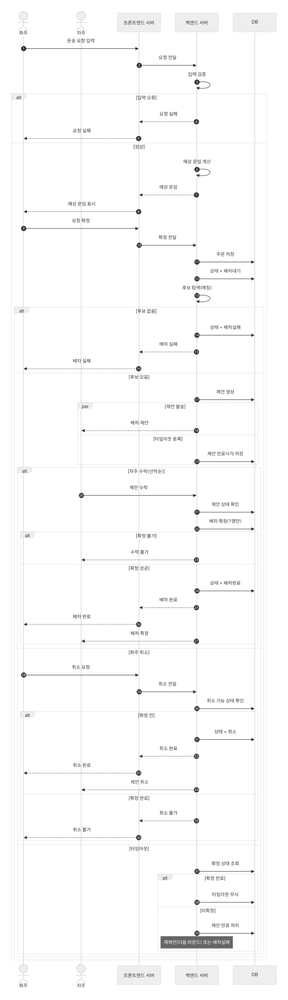
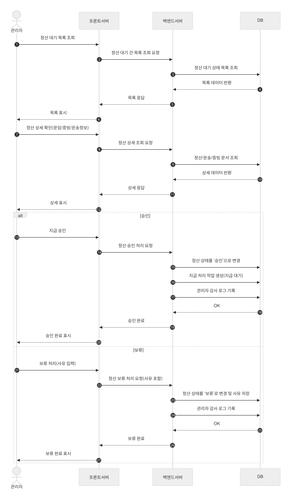
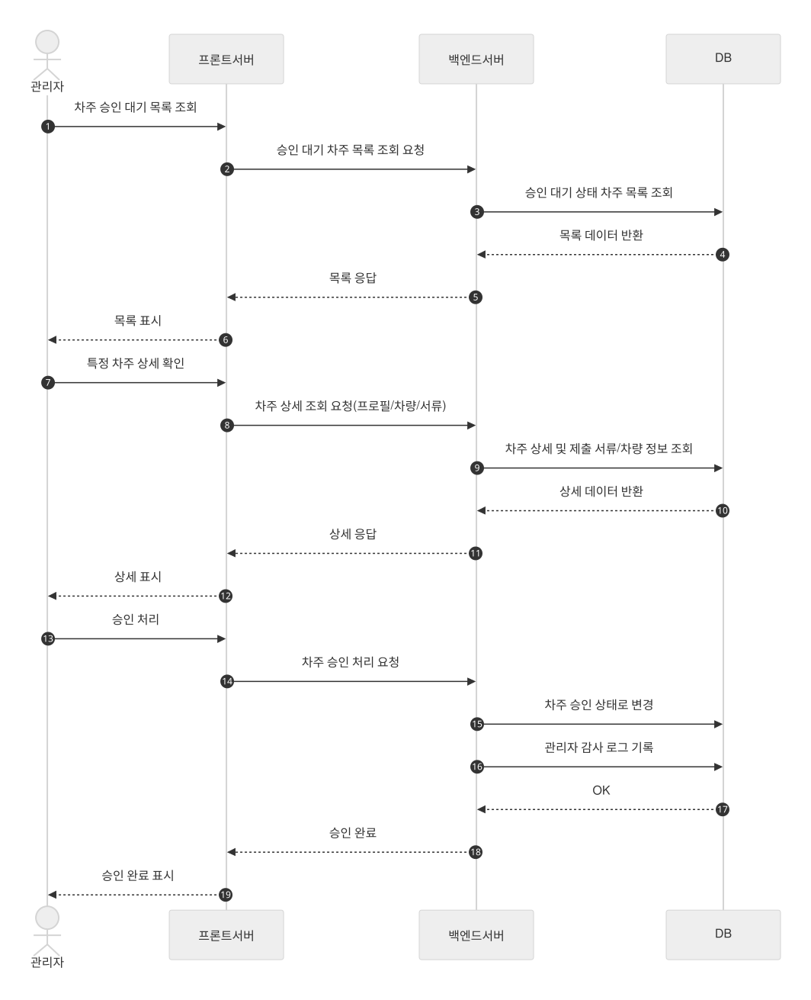
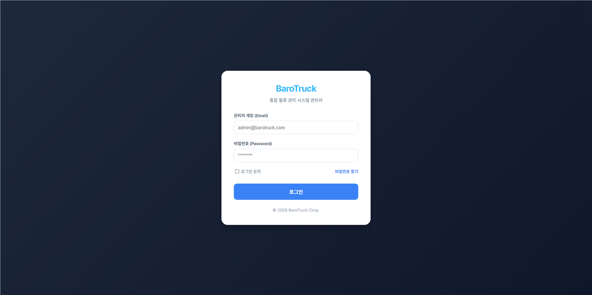
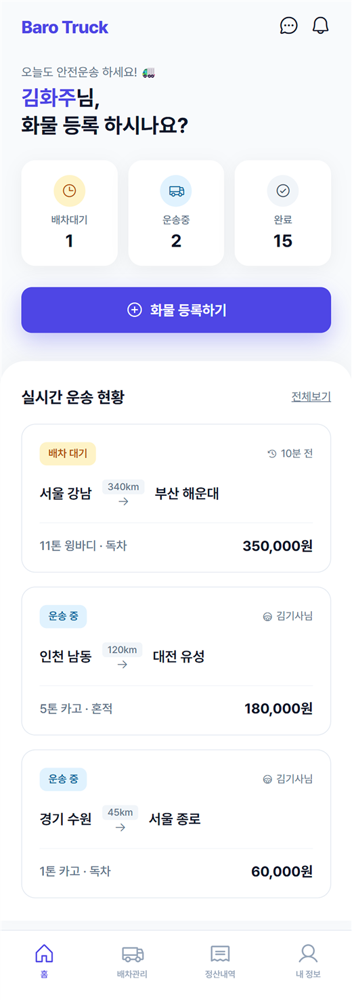
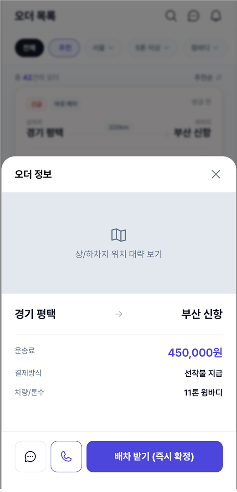

서비스 구조
화주가 화물을 등록하고, 차주가 오더를 확인하고, 관리자가 정산과 회원 상태를 운영하는 구조로 나뉘어 있습니다.
Flagship Project
주문부터 배차, 운행, 결제, 정산까지 이어지는 물류 플랫폼입니다. 이번 상세 페이지는 ERD, 관리자 시퀀스, 화주·차주 앱 화면, 관리자 웹 화면 자료를 바탕으로 프로젝트의 구조와 운영 흐름이 보이도록 다시 정리한 내용입니다.
포트폴리오 프로젝트 목록으로 돌아가기01
자료를 기준으로 보면 Barotruck는 단순 배차 앱이 아니라, 운송 요청 생성부터 정산 승인까지 이어지는 상태 기반 서비스에 가깝습니다.
화주가 화물을 등록하고, 차주가 오더를 확인하고, 관리자가 정산과 회원 상태를 운영하는 구조로 나뉘어 있습니다.
주문, 사용자, 배차 추적, 취소, 리뷰, 이슈, 정산 엔티티가 서로 연결되어 있어서 서비스 흐름을 데이터 모델로도 읽을 수 있습니다.
제가 이 프로젝트에서 강조하고 싶은 부분은 화면 하나가 아니라, 화면 뒤에서 이어지는 상태 변화와 운영 로직을 함께 이해했다는 점입니다.
02
시퀀스 자료를 기준으로 보면 서비스 흐름은 요청 생성, 후보 탐색, 배차 확정, 정산·운영 처리로 크게 나눌 수 있습니다.
화주가 상·하차지, 차종, 톤수, 배차 옵션을 입력하면 시스템은 입력값과 요금 조건을 확인하고 배차 가능한 상태로 전환합니다.
운송 조건에 맞는 차주 후보를 탐색하고 제안을 전송한 뒤, 타임아웃·취소·만료 같은 분기까지 고려해 다음 상태를 결정합니다.
여러 후보가 동시에 응답할 수 있으므로, 실제로는 수락 경쟁 이후 최종 배차를 확정하는 제어 로직이 중요합니다.
운송 완료 뒤에는 화주 청구, 차주 지급, 미수금, 제재, 승인·보류 같은 운영 기능이 이어지며 관리자 웹이 이를 다룹니다.
03
발표 자료 중에서 구조를 설명하는 데 가장 중요한 ERD와 시퀀스 자료를 골랐습니다.




04
관리자 웹과 화주·차주 앱 화면을 함께 놓고 보면, 한 서비스 안에서 각 역할이 무엇을 보는지 더 분명하게 드러납니다.






05
Barotruck 자료를 다시 정리하면서, 제가 특히 강점으로 가져가고 싶은 포인트는 아래 세 가지였습니다.
요청, 제안, 수락, 배차 확정, 운행 완료, 정산 승인처럼 서비스가 상태 전이로 움직일 때 로직을 어떻게 나눠야 하는지 배웠습니다.
사용자 기능만이 아니라 관리자 화면에서 어떤 조회와 승인, 예외 처리 기능이 필요한지도 같이 봤다는 점이 이 프로젝트의 큰 장점입니다.
앱 화면에서 필요한 입력값과 상태 표시가 결국 어떤 API와 데이터 구조를 요구하는지 연결해서 생각하게 됐습니다.